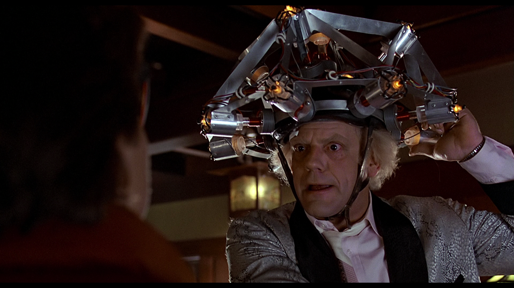
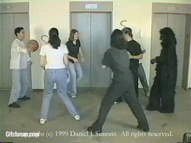
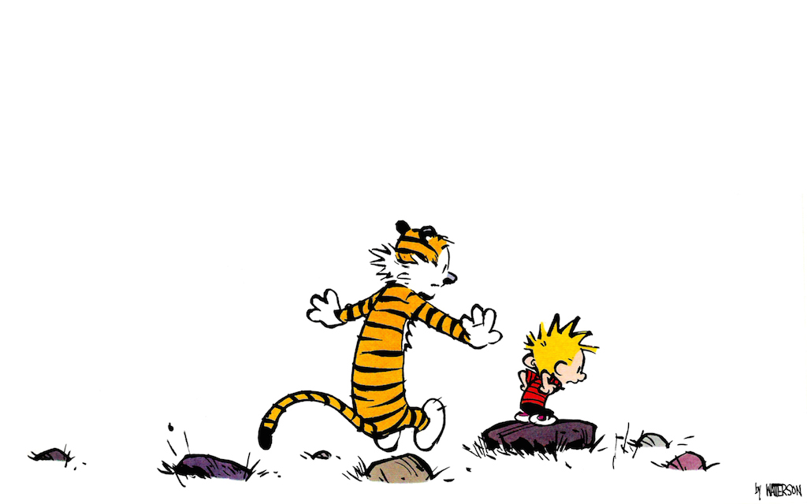
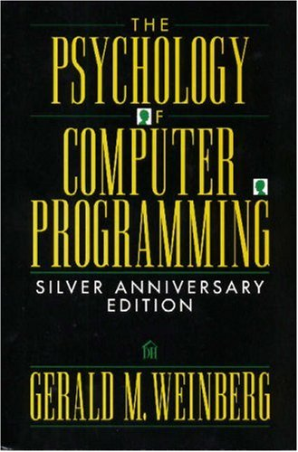

Parlez à un canard
Psychologie du développeur
Parlez à un canard
Blend Web Mix 2014 - Cédric Spalvieri
Cédric Spalvieri
@le_skwi
Dir. technique chez
Novaway
Rubber duck debugging
Science
Bitches !

Le gorille invisible

It's a magical world, Hobbes, ol' buddy...

Coding buddies
Un peu de lecture ...

Merci
@le_skwi
http: //novaway.fr
http: //skwi.github.io/parlez-a-un-canard
Fork me on Github